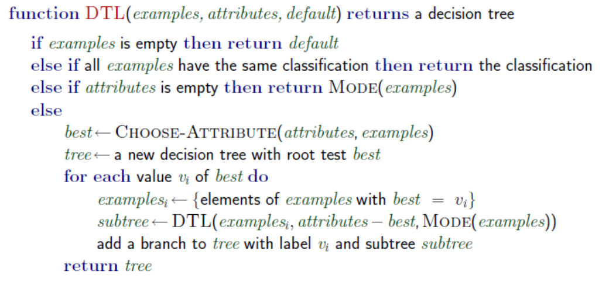
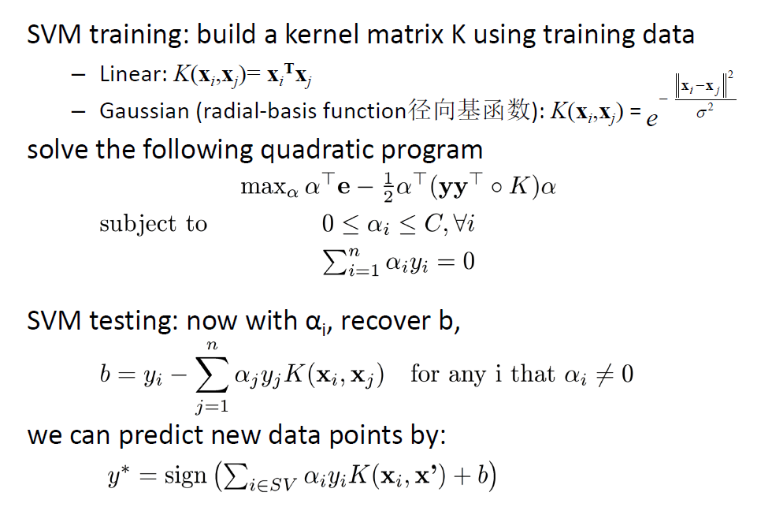
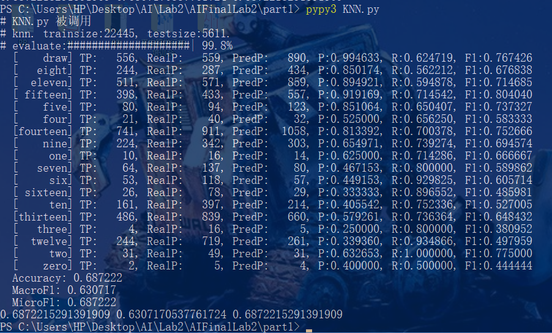
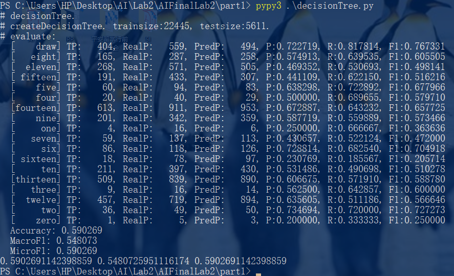
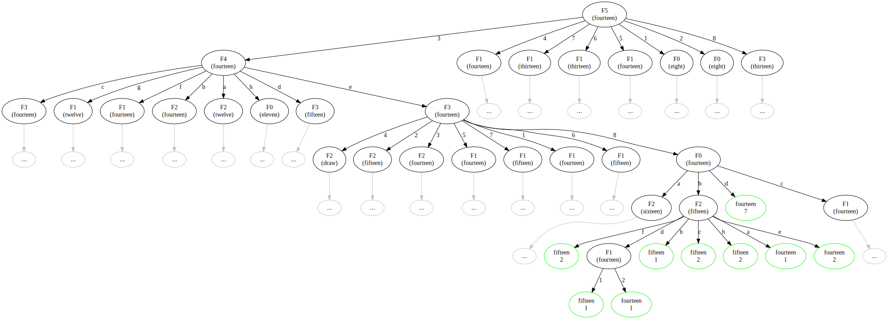
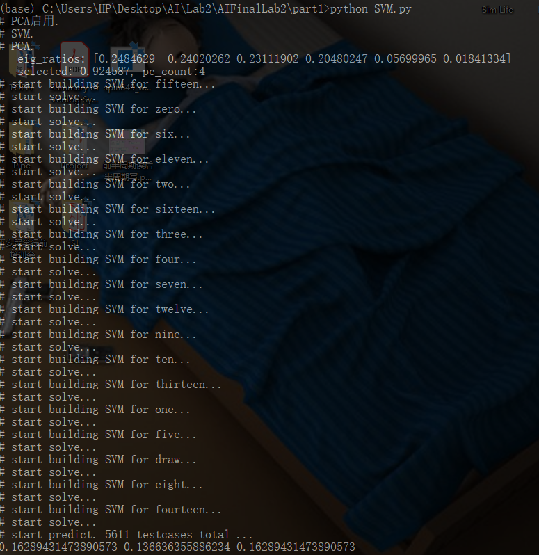
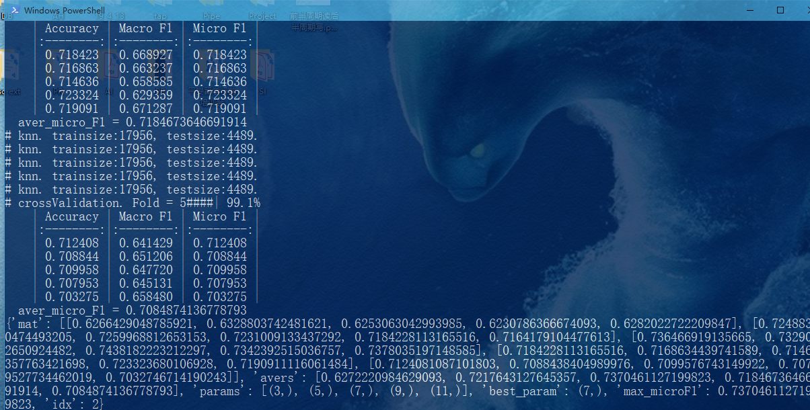

人工智能 Lab2-Part1 实验报告
实验题目：国际象棋Checkmate预测
姓名：王博， 学号：PB16020870
1. 实验要求概述
1.1 数据集介绍
- Krkopt是一个国际象棋的残局数据集，在这张残局的棋盘上，只有白手国王（White King）、白手车（White Rook）、黑手国王（Black King）。本次实验的任务是在给定前面所述的三者的位置的前提下，预测白手玩家能将军所需要的最少步数（这里假设两个玩家的每步走法都是最优的）。
- 数据中包含7个属性（含类别），共有28056个样本，数据属性（含类别）如下所述：
- 白手国王的列坐标（White King Column）
- 白手国王的行坐标（White King Row）
- 白手车的行坐标（White Rook Column）
- 白手车的列坐标（White Rook Row）
- 黑手国王的行坐标（Black King Column）
- 黑手国王的列坐标（Black King Row）
- 类别：最优步数（optimal depth-of-win），从0~16取值，若无法取胜，则为draw，具体分布如下图所示
1.2 实现算法的要求概述
- 提交一个KNN.py文件，要求通过K近邻算法来解决多分类的问题。
- 提交一个decisionTree.py文件，要求调研决策树算法（ID3）并实现来解决多分类的问题。
- 提交一个SVM.py文件，要求通过多分类SVM算法来解决多分类的问题。
- 详细要求略。
1.3 评估要求概述
- 每个文件的核心函数都要返回对测试数据testset的预测ypred，以及与testlabel进行比较后计算得到的性能指标Accuracy、Macro F1和Micro F1。
- 详细要求略。
1.4 交叉验证/参数选择要求概述
- 在数据集上使用交叉验证法来进行训练集和验证集的划分及训练（使用5-fold交叉验证），同时为每个算法挑选合适的参数。
- 详细要求略。
1.5 提交报告要求概述
- 给出你对各个属性间关系进行处理的思路（若是直接进行训练，可以不写）；
- 分别给出算法的伪代码；
- 根据评价指标，给出模型评估结果，要求给出对应的图表分析。
2. 目录结构
.
├── KNN.py | K近邻
├── SVM.py | 支持向量机
├── crossValidation.py | 交叉验证
├── data
│ ├── _tool.py | 随机缩减数据量
│ ├── testset.csv | 测试集数据
│ ├── testsetsmall.csv | 随机缩减的测试集数据（用于SVM）
│ ├── trainset.csv | 训练集数据
│ └── trainsetsmall.csv | 随机缩减的训练集数据（用于SVM）
├── decisionTree.py | 决策树
├── doc
│ ├── lab2_part1.md | 本部分实验报告
│ └── pics(截图)
│ └── ....
└── util
├── PCA.py | 主成分分析
├── __init__.py
├── evaluate.py | 评估
├── getdata.py | 获取数据
├── gzwrite.py | 决策树可视化写.dot文件
└── myprint.py | 辅助显示
3. 算法实现
3.1 K近邻算法实现
实现KNN需要度量两个元素之间的距离。我的做法是，把所有棋子坐标转换为序数，字母转换为ascii码，一个元素即一个6维矢量。可以选择的距离有欧式距离和曼哈顿距离。
实现K近邻算法需要实现如下函数。伪代码如下：
def knn(trainset:list, trainlabel:list, testset:list, testlabel:list, k:int):
类别 = 对trainlabel去重
预测标签列表 = list()
for 测试元素 in testset:
预测类别 = knn_core(测试元素, trainset, trainlabel, k)
预测标签列表.append(预测类别)
Accuracy, MacroF1, MicroF1 = 评估(类别, testlabel, 预测标签列表)
return 预测标签列表, Accuracy, MacroF1, MicroF1
def knn_core(当前待处理元素, trainset:list, trainlabel:list, nb_num:int, debug=False):
"""knn算法"""
创建邻居列表
for 元素, 标签 in zip(trainset, trainlabel):
更新邻居列表(当前待处理元素, 元素, 标签, 邻居列表, 邻居个数)
预测结果 = 根据邻居列表判断最多类别(邻居列表)
return 预测结果
def update_neighbors(中心元素, 元素, 标签, 邻居列表: list, 邻居个数限制: int):
"""更新邻居, 插入排序实现"""
将新元素放在尾部
调整小根堆
if 堆元素超过邻居个数:
移除堆尾部1个元素
3.2 决策树ID3算法实现
实现决策树ID3需要实现如下函数。使用的算法版本在老师PPT基础上稍作修改但逻辑相同：

伪代码如下：
def createTree(trainset:list, trainlabel:list, testset:list, testlabel:list):
决策树 = 创建决策树(trainset, trainlabel)
创建预测标签列表
for 元素 in testset:
预测标签列表.append(决策树.预测(元素))
Accuracy, MacroF1, MicroF1 = 评估(训练集所有类别, testlabel, 预测标签列表)
return predict_label, Accuracy, MacroF1, MicroF1
def createTree_core(dataset:list, datalabel:list):
"""递归建树函数
返回：数根节点
"""
最佳特征, 信息熵, 信息增益 = chooseBestFeature(dataset, datalabel)
if 最佳特征存在:
特征取值到数据集合映射 = 根据一个特征分割数据集(dataset, datalabel, 最佳特征)
当前预测默认值 = 当前比例最高的类别
当前节点 = 创建决策树节点(最佳特征, 信息熵, 信息增益, 当前预测默认值)
for 特征取值 → (数据集合，标签集合) in 特征取值到数据集合映射:
当前节点.该特征取值的孩子 = createTree_core(数据集合，标签集合)
return 当前节点
else:
叶节点标签 = 当前数据集合的公共标签
return (叶节点, 数据元素个数)
def chooseBestFeature(dataset:list, datalabel:list):
"""选择最好的特征
返回：最好的特征, 当前信息熵, 最佳特征的信息增益
"""
当前信息熵 = 计算信息熵(dataset, datalabel)
最低信息熵 = current_entropy
最佳特征 = None
for 特征 in 特征列表:
条件熵 = 计算条件熵(特征, dataset, datalabel)
更新最低熵和最佳特征(条件熵)
信息增益 = 当前信息熵 - 最低信息熵
return 最佳特征，当前信息熵，最佳特征的信息增益
class DecisionTreeNode:
...
def 预测(self, 元素):
特征取值 = 元素[self.特征]
if 特征取值 in self.tree_dict:
子节点 = self.子节点映射(特征取值)
if 子节点的类型是 DecisionTreeNode:
return 子节点.预测(元素)
else:
return 本节点预测值
else:
return 本节点.默认预测值
...
3.3 多分类SVM实现
实现多分类SVM需要实现如下函数。伪代码如下：
def multiClassSVM(trainset, trainlabel, testset, testlabel, sigma=1, marginC=10):
创建类别到SVM的映射
for 目标类别 in 所有类别:
myfilter =
过滤后标签列表 = 对于每个标签按照标签是否等于目标类别来置位 1 或 -1
类别到SVM的映射[目标类别] = softSVM(trainset, 过滤后标签列表, sigma, marginC)
预测标签 = 列表()
for 元素 in 测试集:
for 类别 in 类别到SVM的映射:
预测y值 = 类别到SVM的映射[类别].predict(元素)
if 预测y值 > 最佳预测y值:
最佳预测y值 = 预测y值
猜测的类别 = 类别
预测标签.append(猜测的类别)
Accuracy, MacroF1, MicroF1 = 评估(所有类别, 测试标签, 预测标签)
return 预测标签, Accuracy, MacroF1, MicroF1
def svm_kernel(x1, x2, sigma):
if sigma = 0: 返回线性核函数求值
else 带入sigma返回高斯核函数求值
def softSVM(trainset, trainlabel, sigma, marginC):
"""marginC为soft margin控制参数"""
所有alpha = 求解所有向量alpha(trainset, trainlabel, sigma, marginC)
创建一个SVM对象
alpha阈值 = 6e-5
将所有alpha超过阈值的向量加入支持向量列表
找出最大alpha，最大alpha对应向量
SVM的b = SUM(最大alpha的y值 - 所有向量与最大alpha支持向量核函数值)
return 新建的SVM
- 求解所有向量的alpha
- 本部分理论基础是老师的PPT:

- 本部分的实现需要如下依赖：
- 使用了python的qpsolvers库来求解二次规划问题
- 使用的二次规划求解器是osqp，其可以处理稀疏矩阵。
- 使用的稀疏矩阵形式是scipy.sparse中的csc_matrix。
- 私用的矩阵运算库是numpy。
- qpsolvers要求的输入格式为：
def solve_qp(P, q, G=None, h=None, A=None, b=None, solver='quadprog',
initvals=None, sym_proj=False):
"""
Solve a Quadratic Program defined as:
minimize
(1/2) * x.T * P * x + q.T * x
subject to
G * x <= h
A * x == b
using one of the available QP solvers.
...
伪代码如下：
def solve_sparse(trainset, trainlabel, sigma, marginC):
train_size = len(trainset)
K = 长宽为元素个数的核函数矩阵
在K的对角线增加一个小量1e-5
q = 长度为元素个数的全部由 -1 组成的向量
G1 = 稀疏矩阵(长宽为元素个数的单位对角阵)
G2 = 稀疏矩阵(长宽为元素个数的负单位对角阵)
G = 纵向拼接G1, G2
h1 = 长度为元素个数的全为marginC的向量
h2 = 长度为元素个数的全为0的向量
h = 纵向拼接h1和h2
A = 稀疏矩阵(训练标签)
b = np.asarray([0])
所有alpha求解结果 = 求解二次规划(目标函数(K, q), 小于约束(G, h), 等于约束(A, b), 求解器='osqp')
return 所有alpha求解结果
3 算法运行与可视化
3.1 KNN算法运行
- 用全部数据运行KNN，截图如下：

可见准确度有0.69。关于其中的评估值的详细说明，在第四节评估算法实现。
3.2 决策树算法运行与可视化
-
用全部数据运行决策树，截图如下：

准确度有0.59.
-
在生成可视化时，由于全部展开太大，所以我每一层仅随即展开一个节点。自动生成的dot文件如图：
digraph decisionTree{
ordering = out;
61508256 [color=green, label="draw
2"];
61508240 [color=green, label="draw
2"];
61508304 [color=green, label="nine
2"];
61508288 [color=green, label="nine
2"];
61508272 [color=green, label="nine
2"];
61474224 [label="F4
(nine)"];
61474224 -> 61508240[label="g"];
61474224 -> 61508256[label="h"];
61474224 -> 61508272[label="e"];
61474224 -> 61508288[label="f"];
61474224 -> 61508304[label="d"];
...
根据dot文件导出图片为(每层只展开了一个节点)：

3.3 SVM算法调试与运行
4 评估算法实现和数据特征处理
4.1 评估算法实现
实现了三个评估函数：Accuracy, Macro F1, Micro F1。
理论基础在助教所给实验要求以及
- Accuracy（准确率），即正确预测的样本占所有测试样本的比重。
- Macro F1：将n分类的评价拆成n个二分类的评价，计算每个二分类的F1 score，n个 F1 score 的平均值即为 Macro F1。
- Micro F1：将n分类的评价拆成n个二分类的评价，将n个二分类评价的TP、FP、FN对应相加，计算评价准确率和召回率，由这2个准确率和召回率计算的F1 score即为Micro F1。
- F1的计算：
F1=(P+R)2∗P∗R
其中准确率P和召回率R:P=(TP+FP)TP,R=(TP+FN)TP
- 值得注意的是:
- 如果测试样例中含有训练样例全部类别，那么Micro F1的取值可能和Accuracy相同。
- 如果测试样例不含训练样例全部类别，那么计算TP、FP和FN时，仅考虑真实结果中出现的类别，而不是全部类别。
4.2 手动数据降维思路
按照游戏规则，可知结果和棋子间相对位置关系较大。
所以，我们忽略白手国王的绝对坐标，计算白手车和黑手国王相对于白手国王的相对位置。
将6个维度减少到4个，变换如下：
(x1,y1,x2,y2,x3,y3)⇒(x2−x1,y2−y1,x3−x1,y3−y1)
4.3 特征处理前后初步比较(KNN)
手动降低维度之后，准确率大幅度下降。
我又尝试了其它一些降维方式，比如坐标两两相乘，结果仍然较差。为了排除是我降维方式有问题，接下来我尝试了PCA降维。
4.4 特征的手动处理/PCA降维/不处理综合比较
-
自己手动降维后，算法准确度下降了。于是，我尝试使用PCA方法，选前四个主成分，再尝试。PCA选出的4个主元的特征值占比达到了92.4%。各个特征值为 [0.248462, 0.240202, 0.231119, 0.204802, 0.056999, 0.018413]。
-
使用PCA降维后数据运行SVM的例子如图所示：

-
将所有尝试结果制作成表格如下：
| 算法名称 |
特征处理 |
trainset使用 |
Accuracy |
Macro F1 |
Micro F1 |
| KNN(欧式距离) |
不处理(6个) |
100% |
0.687222 |
0.630717 |
0.687222 |
| KNN(曼哈顿距离) |
不处理(6个) |
100% |
0.687578 |
0.631296 |
0.687578 |
| KNN(欧式距离) |
处理(4个) |
100% |
0.322046 |
0.228962 |
0.282837 |
| KNN(曼哈顿距离) |
处理(4个) |
100% |
0.322402 |
0.229786 |
0.322046 |
| KNN(欧式距离) |
PCA(4个) |
100% |
0.258421 |
0.203423 |
0.258421 |
| KNN(曼哈顿距离) |
PCA(4个) |
100% |
0.282837 |
0.202422 |
0.282837 |
| 决策树 |
不处理(6个) |
100% |
0.590269 |
0.548073 |
0.590269 |
| 决策树 |
处理(4个) |
100% |
冲突数据 |
冲突数据 |
冲突数据 |
| 决策树 |
PCA(4个) |
100% |
0.162360 |
0.015520 |
0.162360 |
| SVM(σ=1,C=10) |
不处理(6个) |
11% |
0.497222 |
0.396550 |
0.497222 |
| SVM(σ=1,C=10) |
处理(4个) |
11% |
0.265555 |
0.195260 |
0.265555 |
| SVM(σ=1,C=10) |
PCA(4个) |
11% |
0.280555 |
0.186044 |
0.280555 |
通过上述观察，可知处理效果确实不好，手动处理的比PCA得到的前四个主元稍好一些（尽管PCA的前四个主元占了92%特征值总和），而且对于决策树算法，手动处理过后还会发生冲突。
根据上表综合比较，认为不降维更好。降维对于算法运行时间的收益不大，却极大的影响了准确度。
5. K折交叉验证
5.1 K折交叉验证算法实现
基本原理同老师PPT，交叉验证时只有一个训练集，将训练集K等分，然后取其中一份用来评估，剩下的用来训练。
只要注意选取数据时要均匀采样，不能全部都是一类即可。
算法简单略，我实现的函数接口是：
def crossValidation(
func, # 分类器（参数已消除）
trainset, # 训练数据
trainlabel, # 训练标签
fold:int # 折数
):
...
return 平均microF1, microF1列表
def crossValidationParams(
func_generator, # 分类器生成函数（参数->分类器）
params_list:list, # 参数列表
trainset:list, # 训练集数据
trainlabel:list, # 训练集标签
fold:int # 交叉验证折数
):
....
return {
"mat":microF1均值矩阵(每一行是一个参数，每一列是一个Fold),
"avers":microF1均值列表,
"params":参数列表,
"best_param":最佳参数,
"max_microF1": microF1最大值,
"idx":microF1最大值编号
}
完成后运行效果如图：

5.2 K近邻算法：5折交叉验证
| 邻居个数 |
Fold 0 |
Fold 1 |
Fold 2 |
Fold 3 |
Fold 4 |
平均 MicroF1 |
| (3,) |
0.626643 |
0.632880 |
0.625306 |
0.623079 |
0.628202 |
0.627222 |
| (5,) |
0.724883 |
0.725997 |
0.723101 |
0.718423 |
0.716418 |
0.721764 |
| (7,) |
0.736467 |
0.732903 |
0.743818 |
0.734239 |
0.737804 |
0.737046 |
| (9,) |
0.718423 |
0.716863 |
0.714636 |
0.723324 |
0.719091 |
0.718467 |
| (11,) |
0.712408 |
0.708844 |
0.709958 |
0.707953 |
0.703275 |
0.708487 |
TODO:
5.3 决策树ID3算法：5折交叉验证
| 最小样本数量 |
Fold 0 |
Fold 1 |
Fold 2 |
Fold 3 |
Fold 4 |
平均 MicroF1 |
| (0,) |
0.566273 |
0.546892 |
0.555580 |
0.561149 |
0.545110 |
0.555001 |
| (3,) |
0.565828 |
0.545333 |
0.554244 |
0.559145 |
0.546001 |
0.554110 |
| (5,) |
0.560258 |
0.539764 |
0.550902 |
0.555358 |
0.538204 |
0.548897 |
| (10,) |
0.534863 |
0.514591 |
0.533081 |
0.531076 |
0.512364 |
0.525195 |
| (20,) |
0.459568 |
0.438182 |
0.456226 |
0.443083 |
0.438405 |
0.447093 |
TODO:
5.4 SVM算法：5折交叉验证
- 在我的SVM实现中，支持对sigma和C的调节，但是也有一些参数是不支持调节的。不支持调节的参数有：
- 高斯核矩阵对角线小量1e-6
- alpha近似为0的判别（小于最大alpha的0.5%）
- 可以调节的参数以及计划的调节范围是：
- σ： 计划调节0, 1, 2。
- C: 即算法中的marginC，计划调节10，20，1000
- 由于SVM跑的太慢，我没有办法尝试所有的参数组合，所以没有让参数任意组合，二十减少了工作量，做了以下三类实验：
- C=10的情况下改变σ
- σ=0(线性核)的情况下改变C
- σ=1(高斯核)的情况下改变C
表格如下；